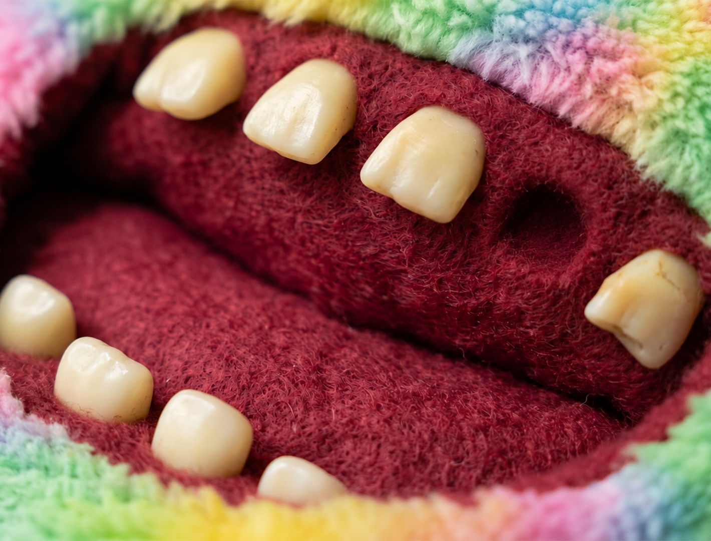
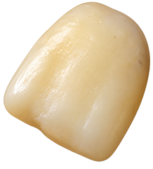

2010년 영국의 루이즈 맥게트릭이 만든 수제 인형에서 시작된 캐릭터로,
‘Funny Ugly Monster’에서 유래한 이름처럼 우스꽝스럽고 기괴한 외형이
특징이다.
온라인 쇼핑몰에서 발견한 인공 치아를 봉제인형에 붙인 것이 탄생의 시작이었다.
부드러운 털과 대비되는 사람 같은 이빨, 불균형한 눈과 과장된 입 모양이 독특한 매력을 만들어낸다.
처음에는 "귀엽다"와 "징그럽다"는 엇갈린 반응을 얻었지만,
오히려 이러한 호불호가 온라인에서 화제를 모았다.